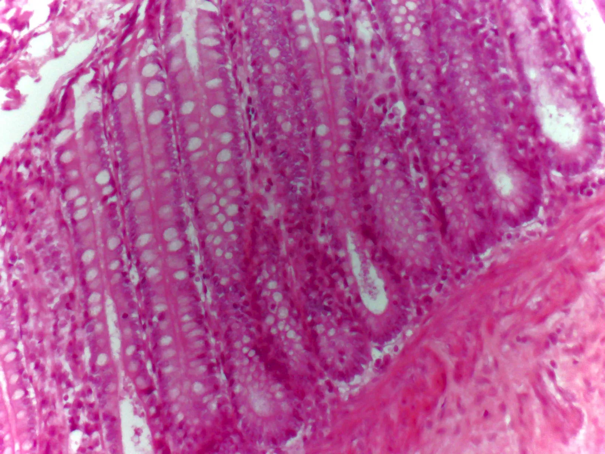

Lâmina 51 · A classificar
Lâmina 51

Toque na imagem para ampliar. No computador, use as setas do teclado para trocar de imagem.
Lâmina 51 · A classificar

Toque na imagem para ampliar. No computador, use as setas do teclado para trocar de imagem.